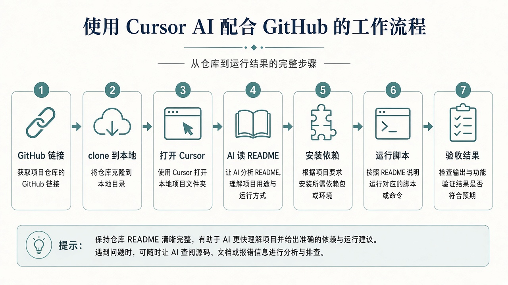

0. 这一章解决什么
不是让 AI「替你写论文」，而是让你学会一种可重复的工作流：
- 拿到公开仓库链接
- 克隆（clone）到自己电脑
- 在 Cursor / Codex 里打开该文件夹
- 让 AI 根据 README 给出逐步安装与运行命令
- 你亲自执行，并用结果验收
和前五章的关系：地基越牢，你越能听懂 AI 在说什么、越能发现它胡说。环境都配不通时，先回 Python 底子。
1. 安全红线（先读）
- 只复现你有权使用的公开教学/开源仓库；不要对来路不明的压缩包一键「全部信任执行」。
- AI 给的命令先自己扫一眼：有没有删盘、改系统权限、上传隐私文件、乱装不明脚本。
- 不要把 API Key、密码、学号隐私贴进公开聊天或写进要提交的仓库。
- 第一次跑陌生项目：优先 README 里的 demo / inference / tiny example，不要一上来全量训练好几天。
- 许可证：作业引用要注明来源；商用另说。
铁律：AI 可以建议命令，回车执行的人是你。看不懂的命令先问「这条在干什么」，再运行。
2. 工具：Cursor 与 Codex
- Cursor：带 AI 的代码编辑器。打开整个项目文件夹后，Agent / Chat 能读多个文件、改代码、在终端跑命令（视你授权而定）。
- Codex：OpenAI 的 AI 编程助手（含相关客户端/集成）。同样按「给仓库上下文 → 要步骤 → 你执行验收」使用。
- 共通点：一次只要求一小步；把 README 要求、报错原文、本机系统（Windows）写清楚。
下文步骤以 Cursor 为主写；Codex 用户把「在 Chat/Agent 里提问」换成对应对话窗口即可，clone 与验收标准相同。
3. 总流程一览

4. 准备工作
- 已安装 Git（终端执行
git --version有输出） - 已安装 Python 与会用 venv（第一章）
- 已安装 Cursor（或 Codex 客户端），能登录
- 准备一个空目录，如
D:\repos，专门放克隆下来的项目
git --version
python --version5. 把 GitHub 拉到本地
5.1 复制仓库地址
打开 GitHub 仓库页 → 绿按钮 Code → 复制 HTTPS 地址，形如：
https://github.com/用户名/仓库名.git5.2 用终端克隆（推荐，清晰可控）
cd D:\repos
git clone https://github.com/用户名/仓库名.git
cd 仓库名
dir成功后，当前文件夹里应能看到 README.md、requirements.txt 或 pyproject.toml 等。
5.3 也可以让 Cursor 帮你克隆
在 Cursor 对话里可以这样说（仍建议你看清命令再允许执行）：
请在 D:\repos 下用 git clone 拉取这个仓库，不要改其它目录：
https://github.com/用户名/仓库名.git
克隆完成后告诉我文件夹路径，并列出顶层文件名。大仓库 / LFS：有的项目用 Git LFS 存权重。clone 后若缺文件，按 README 再拉 LFS 或另下权重，不要假设 clone 完就能训。
6. 用 Cursor 打开项目
- Cursor：File → Open Folder → 选中刚克隆的
仓库名文件夹 - 左侧能看到项目树，确认根目录就是含 README 的那一层（不要只打开到上一级
repos） - 打开集成终端（Terminal → New Terminal），确认路径已在仓库内
之后所有「让 AI 改文件 / 跑命令」都基于这个工作区，AI 才读得到正确上下文。
7. 让 AI 读仓库（先理解，再动手）
不要一上来就说「帮我全部跑起来」。先让它做项目导读：
请阅读本仓库的 README（以及 docs 里入门文档，若有）。
我是 Windows + 本科生，只有 1 张消费级显卡 / 或只有 CPU。
请用中文输出：
1）这个项目是干什么的（三句话）
2）官方推荐的最小可运行方式（demo/inference，不要一上来全量训练）
3）依赖怎么装（venv 还是 conda；关键文件名）
4）我需要提前准备的数据/权重链接
5）风险点：可能很吃显存、要很久、Windows 不友好等
先不要改任何文件，不要执行安装。读完导读，你应能用自己的话复述「最小目标是什么」。复述不了就继续追问，别急着装包。
8. 装依赖与创建环境
典型提问：
根据 README，请给出在 Windows、Python 3.x、venv 下的安装步骤。
要求：
- 命令一条条给出，每条后面用一句话解释作用
- 优先 CPU 可运行的依赖；若必须 GPU，说明 CUDA 假设
- 先创建 .venv 再 pip
- 现在只给命令，等我回复「已执行成功」后再进行下一步你在终端里亲自执行，例如：
python -m venv .venv
.\.venv\Scripts\Activate.ps1
python -m pip install -U pip
python -m pip install -r requirements.txt若 README 写的是 Linux/conda，让 AI「翻译成 Windows + venv 等价步骤」，并标明哪些命令在 Windows 上可能失败。
9. 下载数据 / 权重（若需要）
README 提到需要数据和预训练权重。
请列出：下载地址、解压到哪个相对路径、大概体积。
请给我可在 PowerShell 使用的下载/解压命令（或说明需浏览器手动下）。
不要编造不存在的 URL；若 README 写得很含糊，请指出缺哪一段信息。下载完成后，让 AI 帮你核对路径：
请检查数据是否已放在 README 要求的目录。
列出我当前仓库内相关文件夹；若缺失，只说明缺什么，先不要改代码。10. 运行最小示例
环境与数据已就绪。
请给出「最小可运行」的一条或一组命令（推理/demo 优先）。
说明：在哪个目录执行、预期终端输出长什么样、会生成什么文件。
仍然一步步来：先给我命令，我跑完把输出贴给你。跑通后，让 AI 帮忙解释输出，但结论你自己判断是否合理。
训练任务：若最小示例仍是长时间训练，先问有没有 --epochs 1、debug、overfit one batch 之类开关，用小配置验证管线。
11. 报错时怎么追问
运行命令：
（粘贴你执行的命令）
完整报错：
（从 Traceback 到最后一行原样粘贴）
本机：Windows，已激活 .venv，Python 版本 ____。
请：
1）用一句话判断错误类型（缺包 / 路径 / CUDA / 版本冲突 / 代码 bug）
2）只给下一步最小修复（改哪几个文件或装哪个包）
3）不要重构整个项目同一报错修两次仍不行：把「已尝试过的步骤」也写上，避免 AI 原地打转。
12. 验收清单（比「没红字」更重要）
- 命令是在 README 指向的目录执行的吗？
- 用的是项目 venv，而不是系统乱装的包吗？
- 有没有生成预期文件（图、日志、
outputs/）？ - 指标/demo 结果是否离谱（准确率 0、全 NaN、图全黑）？
- 你能否向同学讲清：这个仓库输入什么、输出什么？
13. 课堂可用的练习方式
老师可指定一个中小型公开仓库当课堂练习（避免一上来超大多模态工程）。学生按本章流程打卡：
- 提交克隆下来的本地路径截图或
git remote -v输出 - 贴出 AI 导读的「最小可运行命令」
- 贴出成功运行的终端尾部输出 / 生成文件列表
- 用三句话写：项目做什么、我跑了哪条命令、如何验收
也可先用学生自己第五章的 ch05 小项目练「让 AI 根据报错修代码」；再升级到外部 GitHub 复现。
过关自检
完成 0 / 8 项
提示词速查（复制即用）
一键版（仍建议分步执行）：
仓库已用 Cursor 打开。系统 Windows。
目标：按 README 复现最小 demo。
请严格分步：①导读 ②venv 安装命令 ③数据/权重 ④运行命令。
每一步先输出给我确认，我说「继续」再给下一步。
禁止删除我的文件；禁止提交 git；禁止泄露或索要密钥。